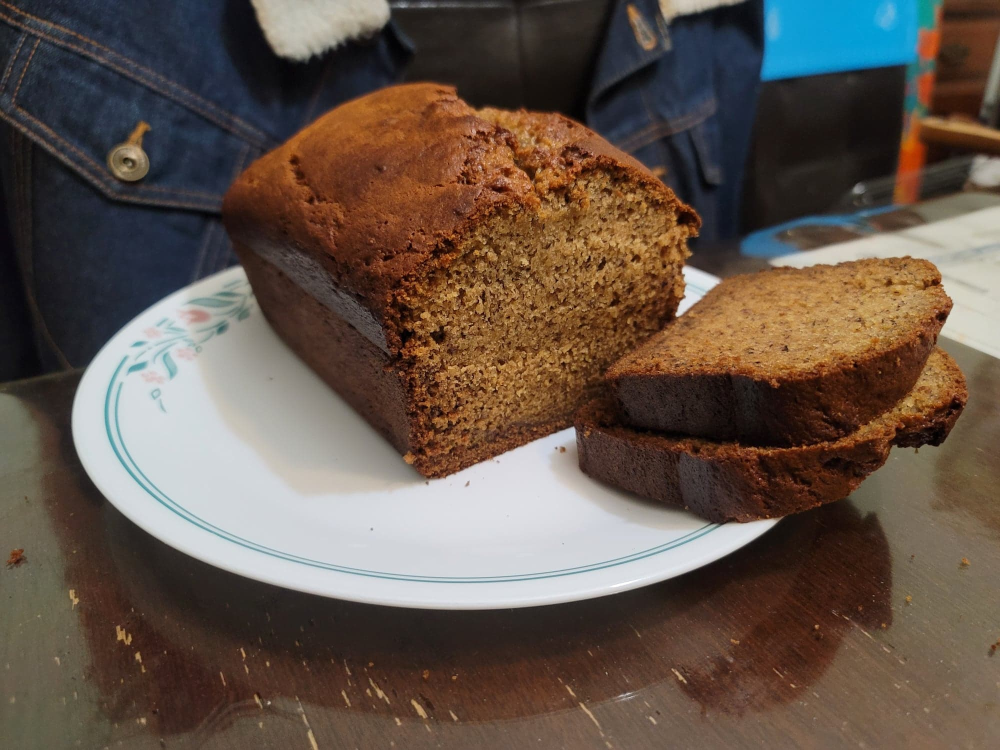

Sourdough Banana Bread

Ingredients:
- 375 g Overripe bananas
- 225 g Brown sugar
- 1 1/2 tsp Vanilla extract
- 2 Eggs
- 100 g Sourdough starter
- 250 g Flour
- 1 1/2 tsp Baking soda
- 1/4 tsp Salt
- 1/2 cup Canola oil
- 1/4 cup Milk
Instructions:
- Preheat an oven to 360 degrees Fahrenheit. Grease a 9x5 loaf pan.
- In a large mixing bowl, add in the bananas, sugar, and vanilla extract. Cream with an electric hand mixer until mostly smooth. Add in the eggs and sourdough starter and cream once more until smooth.
- Into a separate bowl, sift the flour, baking soda, and salt. Slowly beat it into the banana mixture in batches with the electric hand mixer.
- Add in the milk and oil and beat together until just combined. Do not over mix.
- Transfer the mixture into the prepared loaf pan. Place into the oven and bake for about 60 minutes, or until a toothpick comes out clean. Let cool for 20 minutes in the pan before transfering to a wire rack to cool completely. Slice and serve.